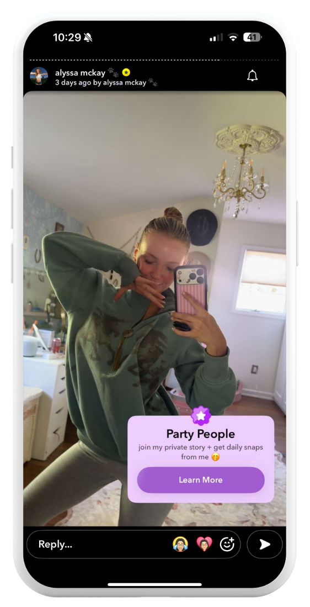
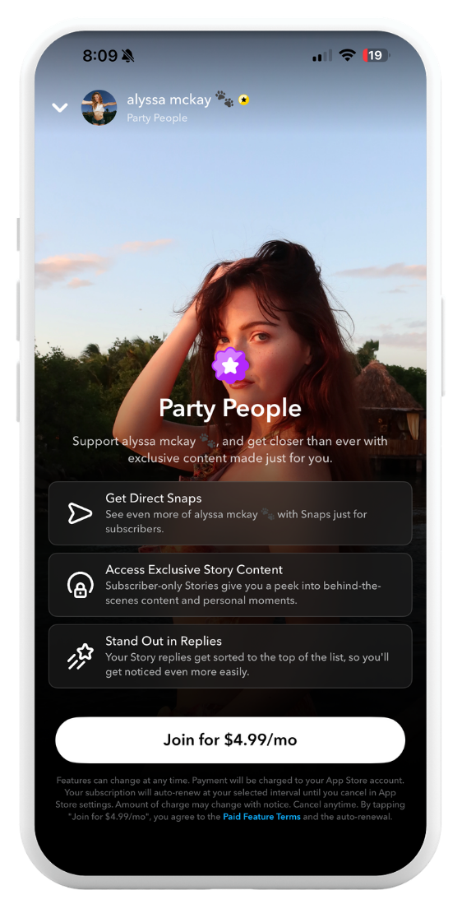
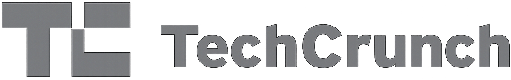
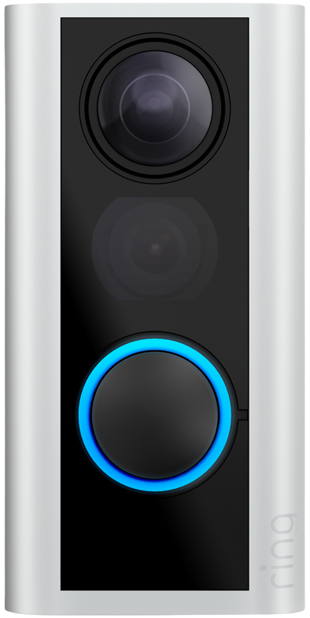
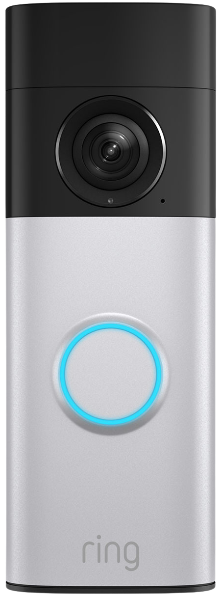
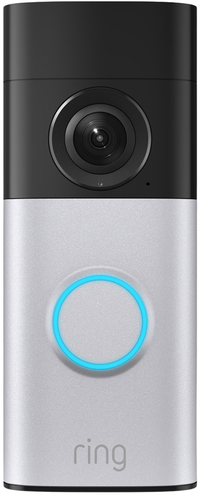
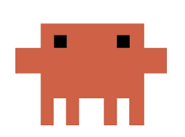

<title>Tiffany Kanamaru — User Researcher</title>
<meta charset="UTF-8" />
<meta name="viewport" content="width=device-width, initial-scale=1.0" />
<link rel="preconnect" href="https://fonts.googleapis.com" />
<link rel="preconnect" href="https://fonts.gstatic.com" crossorigin />
<link href="https://fonts.googleapis.com/css2?family=Newsreader:wght@300;400;500&family=Inter:wght@300;400;500;600;700&family=Caveat:wght@500;600;700&display=swap" rel="stylesheet" />
<link rel="stylesheet" href="styles.css" />
<script src="password-gate.js"></script>

<aside class="sidebar" id="sidebar">
  <a class="logo" href="index.html">Tiffany Kanamaru</a>
  <div class="sidebar-icons">
    <button type="button" class="icon-btn" data-copy-email="tiffanykanamaru@gmail.com" aria-label="Copy email">
      
      <span class="icon-tooltip">Copy email</span>
    </button>
    <a class="icon-btn" href="https://www.linkedin.com/in/tiffany-kanamaru/" target="_blank" rel="noopener" aria-label="LinkedIn">
      
    </a>
  </div>
  <button class="nav-toggle" id="nav-toggle" aria-label="Toggle menu">
    <svg viewBox="0 0 24 24" fill="none" stroke="currentColor" stroke-width="2" stroke-linecap="round"><path d="M3 6h18M3 12h18M3 18h18"/></svg>
  </button>
  <ul class="sidebar-nav">
    <li><a href="#work" class="active">Work</a></li>
    <li><a href="about.html">About</a></li>
    <li><a href="ai.html">AI</a></li>
    <li><a href="resume/Tiffany%20Kanamaru%20Resume.pdf" target="_blank" rel="noopener">Resume</a></li>
  </ul>
</aside>
<script>
  document.getElementById('nav-toggle').addEventListener('click', function () {
    document.getElementById('sidebar').classList.toggle('open');
  });
  document.querySelectorAll('[data-copy-email]').forEach(function (btn) {
    var tip = btn.querySelector('.icon-tooltip');
    var defaultText = tip.textContent;
    btn.addEventListener('click', function () {
      navigator.clipboard.writeText(btn.getAttribute('data-copy-email'));
      tip.textContent = 'Copied!';
      setTimeout(function () { tip.textContent = defaultText; }, 1500);
    });
  });
</script>

<main class="main">

<section class="hero">
  <div class="wrap">
    <span class="eyebrow-script"><span class="wave-emoji" aria-hidden="true">👋</span> I'm Tiffany.</span>
    <h1>I enjoy turning user insights into products that feel intuitive, delightful, and human.</h1>
  </div>
</section>

<section class="section" id="work">
  <div class="wrap">
    <div class="work-feature">
      <div class="work-feature-image">
        <div class="phone-stack">
          <div class="phone-slot phone-slot-back"></div>
          <div class="phone-slot phone-slot-front"></div>
          
          
        </div>
      </div>
      <div class="work-feature-content" style="margin-top: -220px;">
        <div class="work-feature-brand">
          
          <span>Snapchat</span>
        </div>
        <h3>Creator Subscriptions</h3>
        <p>Creator Subscriptions is a subscription service that allows Snapchat users to subscribe to their favorite creators for access to exclusive content and perks.</p>
        <p>I led the end to end research for this product, from early concept to post launch. I conducted competitive analysis to understand how creator subscription platforms approached monetization and led foundational research with creators to understand their needs with a subscription product, helping define the product strategy and core subscription experience.</p>
        <p>After launch, I conducted evaluative research to uncover how creators were using their subscription, which generated insights that informed the long term product roadmap.</p>
        <div class="stats-row" style="grid-template-columns: repeat(3, 1fr); gap: 24px; margin: 8px 0 0; padding: 8px 0 24px; border-top: none;">
          <div>
            <div class="stat-number">$600K</div>
            <div class="stat-label">Monthly revenue</div>
          </div>
          <div>
            <div class="stat-number">&uarr; 100K</div>
            <div class="stat-label">Subscribers in 6 months</div>
          </div>
          <div>
            <div class="stat-number">70</div>
            <div class="stat-label">Creators onboarded</div>
          </div>
        </div>
        <div class="press-row">
          <a class="press-link" href="https://techcrunch.com/2026/02/17/snapchat-launches-creator-subscription-in-the-u-s/" target="_blank" rel="noopener">
            
            <span class="icon-tooltip">Read more</span>
          </a>
          <a class="press-link" href="https://www.cnbc.com/2026/02/17/snap-to-launch-creator-subscriptions-in-push-to-diversify-revenue-.html" target="_blank" rel="noopener">
            
            <span class="icon-tooltip">Read more</span>
          </a>
          <a class="press-link" href="https://newsroom.snap.com/snapchat-launches-creator-subscriptions" target="_blank" rel="noopener">
            
            <span class="icon-tooltip">Read more</span>
          </a>
        </div>
      </div>
    </div>

    <div class="work-feature work-feature--reverse">
      <div class="work-feature-image">
        
      </div>
      <div class="work-feature-content">
        <div class="work-feature-brand">
          
          <span>Snapchat</span>
        </div>
        <h3>Timeline Editor</h3>
        <p>Timeline Editor is Snapchat&rsquo;s native video editing tool, designed to make it easier for creators to edit and publish short-form videos directly within the app.</p>
        <p>I led the research from concept through launch, conducting foundational research to identify the editing capabilities that would deliver the most value in the MVP and iterative usability studies to refine the experience. My research helped shape feature prioritization and ensured creators could successfully complete key editing tasks before launch.</p>
        <div class="stats-row" style="grid-template-columns: repeat(3, 1fr); gap: 24px; margin: 8px 0 0; padding: 8px 0 24px; border-top: none;">
          <div>
            <div class="stat-number">&uarr; 5%</div>
            <div class="stat-label">Increase in videos posted to Spotlight</div>
          </div>
          <div>
            <div class="stat-number">1M+</div>
            <div class="stat-label">Videos edited</div>
          </div>
          <div>
            <div class="stat-number">6 months</div>
            <div class="stat-label">From kickoff to launch</div>
          </div>
        </div>
        <div class="press-row">
          <a class="press-link" href="https://techcrunch.com/2025/06/12/snapchat-adds-new-features-for-creators-including-an-easier-way-to-edit-videos/" target="_blank" rel="noopener">
            
            <span class="icon-tooltip">Read more</span>
          </a>
          <a class="press-link" href="https://newsroom.snap.com/empowering-content-creation-with-new-tools" target="_blank" rel="noopener">
            
            <span class="icon-tooltip">Read more</span>
          </a>
        </div>
      </div>
    </div>

    <div class="work-feature">
      <div class="work-feature-image">
        
      </div>
      <div class="work-feature-content">
        <div class="work-feature-brand">
          
          <span>Snapchat</span>
        </div>
        <h3>Spotlight</h3>
        <p>At Snapchat, I worked on growing the number of creators posting to Spotlight, Snapchat&rsquo;s short-form video platform.</p>
        <p>I partnered closely with Product and Design to understand the end-to-end content creation journey from discovering inspiration and saving ideas to creating, editing, and publishing content. Through foundational research, usability studies, competitive analysis, and journey mapping, I identified the biggest opportunities across the creator experience, helping the team prioritize product investments and shape the future of content creation on Snapchat.</p>
      </div>
    </div>

    <div class="work-feature work-feature--reverse">
      <div class="work-feature-image">
        <div class="doorbell-stack">
          <div class="doorbell-item">
            
            <span class="doorbell-glow" style="left: 50.2%; top: 66.4%; width: 88%;"></span>
            <span class="doorbell-pulse" style="left: 50.2%; top: 66.4%; width: 48.7%;"></span>
          </div>
          <div class="doorbell-item">
            
            <span class="doorbell-glow" style="left: 49.9%; top: 62.3%; width: 85%;"></span>
            <span class="doorbell-pulse" style="left: 49.9%; top: 62.3%; width: 47.5%;"></span>
          </div>
          <div class="doorbell-item">
            
            <span class="doorbell-glow" style="left: 49.4%; top: 64.7%; width: 86%;"></span>
            <span class="doorbell-pulse" style="left: 49.4%; top: 64.7%; width: 48%;"></span>
          </div>
        </div>
      </div>
      <div class="work-feature-content">
        <div class="work-feature-brand">
          
          <span>Ring Home Devices</span>
        </div>
        <h3>Ring Doorbell Shopping</h3>
        <p>Ring offers seven different video doorbells, and we heard from customers that it was often difficult to determine which doorbell best fit their needs. I conducted a usability study to understand where customers struggled throughout the shopping experience online and identify opportunities to make shopping for a doorbell easier.</p>
        <p>My findings informed improvements to the Ring website that addressed key usability issues, making it easier for customers to compare doorbells and determine which product best fit their needs.</p>
      </div>
    </div>

  </div>
</section>

<footer>
  <div class="wrap footer-wrap">
    <span class="footer-copyright">
      <span style="font-family: var(--font-script); font-size: 1.3rem; color: var(--ink-soft);">Made with Claude </span>
      &copy; 2026 Tiffany Kanamaru
    </span>
    <span style="display:flex; flex-direction:column; align-items:flex-end; gap:2px;">
      <span style="font-family: var(--font-script); font-size: 1.3rem; color: var(--ink-soft);">Let's chat!</span>
      <a href="mailto:tiffanykanamaru@gmail.com">tiffanykanamaru@gmail.com</a>
    </span>
  </div>
</footer>

</main>
